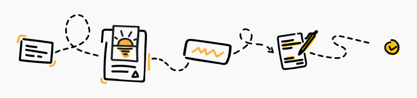
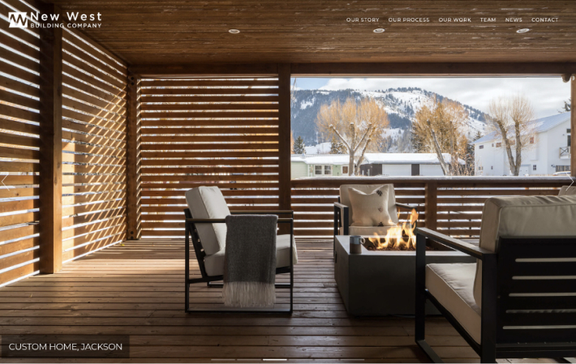

Whether you choose to create your website yourself or hire a professional, you can use this checklist to help keep the process on track:
It's important to choose a color palette and typography that matches your brand. This will help you to create a consistent design and user experience.
Not sure what colors to pick? It helps to do a bit of research into color psychology. For example, many banks use blue in their branding because it's associated with trust, security, and stability.
On the other hand, yellow is considered a strong color, so it's not surprising that many top construction companies use it.
The same goes for your typography. Some fonts appear bold and robust, while others are creative or elegant.
It's important to choose a color palette and typography that matches your brand. This will help you to create a consistent design and user experience.
Not sure what colors to pick? It helps to do a bit of research into color psychology. For example, many banks use blue in their branding because it's associated with trust, security, and stability.
On the other hand, yellow is considered a strong color, so it's not surprising that many top construction companies use it.
The same goes for your typography. Some fonts appear bold and robust, while others are creative or elegant.
- Parallax scrolling and subtle animation effects keep your attention as you scroll down the page.
- A clear menu design linking to important pages such as portfolio and company information.
- A step-by-step project planning tool works as an effective lead capture form.
The best construction websites have simple, clean designs that are easy to navigate. Visitors should quickly understand what sort of construction projects you take on and what you can offer them.
Your site must include high-quality visuals of your completed projects. Make sure you invest in professional photography and videography. This can make a massive difference to your site's overall look and feel.
A great website should also be mobile-friendly and look good across all devices.
The best construction websites have simple, clean designs that are easy to navigate. Visitors should quickly understand what sort of construction projects you take on and what you can offer them.
Your site must include high-quality visuals of your completed projects. Make sure you invest in professional photography and videography. This can make a massive difference to your site's overall look and feel.
A great website should also be mobile-friendly and look good across all devices.
The best construction websites have simple, clean designs that are easy to navigate. Visitors should quickly understand what sort of construction projects you take on and what you can offer them.
Your site must include high-quality visuals of your completed projects. Make sure you invest in professional photography and videography. This can make a massive difference to your site's overall look and feel.
A great website should also be mobile-friendly and look good across all devices.
(H2) Cool construction websites design examples (DOs)
(H3) Amazing background images or videos
(H4) McCowngordon Construction
Headings with number
(H2) Cool construction websites design examples (DOs)
(H3) Amazing background images or videos
(H4) McCowngordon Construction
UL ans OL lists
- Parallax scrolling and subtle animation effects keep your attention as you scroll down the page.
- A clear menu design linking to important pages such as portfolio and company information.
- A step-by-step project planning tool works as an effective lead capture form.
- Parallax scrolling and subtle animation effects keep your attention as you scroll down the page.
- A clear menu design linking to important pages such as portfolio and company information.
- A step-by-step project planning tool works as an effective lead capture form.
- Parallax scrolling and subtle animation effects keep your attention as you scroll down the page.
- A clear menu design linking to important pages such as portfolio and company information.
- A step-by-step project planning tool works as an effective lead capture form.
- Parallax scrolling and subtle animation effects keep your attention as you scroll down the page.
- A clear menu design linking to important pages such as portfolio and company information.
- A step-by-step project planning tool works as an effective lead capture form.
- A simple layout with lots of white space lets the images speak for themselves.
- A simple layout with lots of white space lets the images speak for themselves.
- A simple layout with lots of white space lets the images speak for themselves.
- A simple layout with lots of white space lets the images speak for themselves.
- A simple layout with lots of white space lets the images speak for themselves.
- A simple layout with lots of white space lets the images speak for themselves.
Blockquotes
Wish to avoid the pitfalls of designing your web site?
Check out how our web design process works
Turn your project over to the professionals at epiic.
Want to see more construction website designs?
Check out how our web design process works
At epiic, you get unlimited designs, custom-made for
your business for a flat monthly fee.
Want to save time and avoid
common pitfalls when you're designing your site?
Download our exclusive guide for free tips and trade secrets
from professional web designers.
Don't make the same website
“GET Started”
design mistakes as these construction companies did!
Get started with epiic and get your site built by professionals.
It's more affordable than
Choose the plan
you might think to have a designer on-call 24/7.
Just check out our epiic price plans and choose the
option that best suits your needs-
Paragraphs and images
Let's face it, if you're in charge of a construction company, you're an expert in concrete, not coding. However, it's important to have a high-ranking, visually appealing, and informative website to capture the interest of potential customers. For this reason, most companies choose to outsource their construction website design to an experienced web designer. Makes sense, right?
We'll also have a look at some “less-than-inspiring” designs to show you why they're not so great and demonstrate some common DON'Ts to avoid.
We've grouped the examples below by their main design features so you can get a better idea of exactly why these sites work so well.
Updated: May 20, 2021
Andy Zenkevich
The best writer we ever had! After spending a few years working as CEO, Andy made the switch to writing full-time. He works as a Content Writer at Help Scout, hoping to help improve the agent and customer experience.